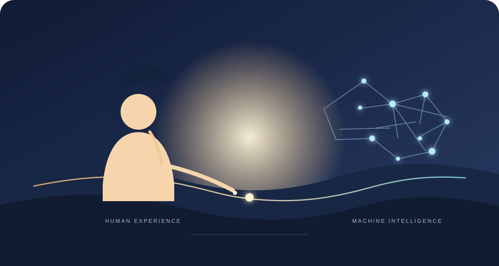

What Makes Humans Unique in the Age of AI?

If AI becomes better than people at solving many problems, does that erase the difference between a machine and a human?
Not necessarily. Problem-solving ability is one measure of capability, but it is not the only way to think about what makes a person human. A machine can calculate, classify, and generate solutions at remarkable speed. People also experience lives: we form relationships, feel wonder, make choices, and live with the consequences of what we do.
The distinction is not simply about who is smarter. It is also about the different roles people and AI play—and about questions of experience and responsibility that capability alone does not answer.
The calculator paradox
A basic calculator can multiply 7,834 by 9,211 faster than almost anyone. Its speed does not make it a person; it is a tool performing a defined operation. Modern AI is vastly more complex and can handle open-ended tasks, but a strong result by itself does not tell us whether a system has subjective experience, personal aims, or understanding in the human sense.
It is worth being careful here: consciousness in machines remains a debated question. We should not treat fluent language as proof of inner experience, nor assume that future systems could never raise new questions about it.
Different strengths, different stakes
The AI system
- Can analyze large amounts of information and help solve difficult technical problems.
- Can support research by finding patterns, testing ideas, and accelerating routine work.
- Does not take moral responsibility for how people choose to use its output.
The human scientist
- Can bring lived experience, curiosity, and a sense of wonder to a question.
- Can set priorities and decide which problems deserve attention.
- Must weigh consequences and answer to other people for decisions and discoveries.
Why the human element matters
Three parts of human life help explain why raw problem-solving is not the whole story:
- Purpose: People choose goals based on needs, values, and hopes for the future. AI can help pursue a goal, but people and institutions remain responsible for deciding which goals are worth pursuing.
- Ethics and care: A system can help optimize a hospital schedule, but decisions about patients involve dignity, fairness, and human judgment—not efficiency alone.
- Experience: Discovery can be accompanied by frustration, excitement, or awe for the people involved. Whether an AI can have anything comparable is an open question; we should avoid mistaking a convincing description of a feeling for evidence that it is felt.
The partnership
AI may become an increasingly capable tool for research, medicine, education, and creative work. That does not make human contribution irrelevant. People can provide direction, context, oversight, and accountability, while AI helps expand what can be explored and accomplished.
A sharper tool does not replace the responsibility of deciding how—and whether—to use it.
The future is not only about how capable AI becomes. It is also about the values people bring to its development and use, and how thoughtfully we share the work.